‘The Military That Fought the War Should Have Been Rehabilitated, Just Like the Surrendered LTTE Cadres’
‘The Military That Fought the War Should Have Been Rehabilitated, Just Like the Surrendered LTTE Cadres’
Jaffna Monitor hellojaffnamonitor@gmail.com 24 S ri Lanka's military history, often shaped by Sinhalese voices, has a rare exception: Major General (Retd.) Hermenagild Lakshman David. Born in Jaffna, the cultural heartland of Sri Lanka’s Tamil community, David rose to a two-star General—an achievement few Tamil officers have attained in the Sinhala-majority armed forces. With a Doctorate in Business Administration, an MSc in Defence and Strategic Studies, and an MBA, he became a transformative figure ‘The Military That Fought the War Should Have Been Rehabilitated, Just Like the Surrendered LTTE Cadres’ Cover Story – Exclusive Interview with Jaffna- born Tamil Major General (Retd.) Hermenagild Lakshman David BY: Our Special Correspondent Hermenagild Lakshman David
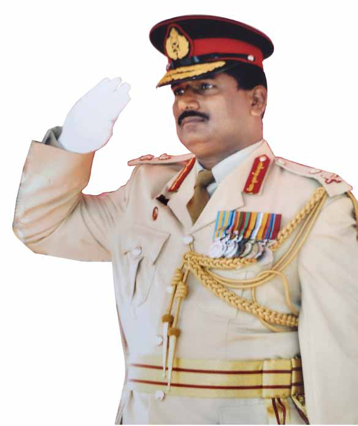
Jaffna Monitor hellojaffnamonitor@gmail.com 25 in Sri Lanka’s military education system. His legacy is etched in the institutions he shaped: as Chief Instructor and Commanding Officer at the Sri Lanka Military Academy, Deputy Vice-Chancellor at Kotelawala Defence University (KDU), and Commandant of the Defence Services Command and Staff College. But it was during his command in Vavuniya in the mid-2000s that David truly stood apart. In a region predominantly Tamil, his leadership was a stark contrast to the military’s often harsh and oppressive approach during the civil war. Known for his humanity and generosity, he earned the respect and goodwill of the Tamil community—a rare achievement in a conflict marked by deep mistrust and suffering. While the Sri Lankan military’s actions during the war remain a source of pain and trauma for many Tamils, David’s tenure in Vavuniya offered a glimpse of what leadership could look like when rooted in empathy and fairness. As the Founder Chairman of the Fr. H. S. David Foundation and former President of the Sri Lanka Institute of Training and Development, he has worked tirelessly to empower others. Now residing in Canada, he has taken on a new role as a licensed member of the Law Society, advocating for clients in tribunals and courts, and contributing to the Immigration and Refugee Board of Canada. In this intimate and revealing interview with Jaffna Monitor, Major General David breaks his silence and offers unparalleled insights into his journey. Were there other Tamils who held the position of Major General in the Sri Lankan Army? Yes, a few Tamils have held the prestigious rank of Major General in the Sri Lankan Army. In the history of independent Sri Lanka’s military, the first Ceylonese Army Commander was of Tamil origin—Colonel Anton Muttukumaru—who served as the Commander of the Ceylon Army. However, he was promoted to the rank of Major General only after his retirement. The first Tamil to achieve this rank while in active service was Major General E. George Thevanayagam, an alumnus of St. John's College, Jaffna. In addition to him, approximately three to four other Tamils attained the rank of Major General during their service. Who were the Tamil Major Generals during the war with the LTTE? During the conflict, I was the only Tamil from the North to be promoted to the rank of Major General. Another notable figure was Major General Leonard Mark, who served as the Commander of Security Forces in Jaffna and Major General Anton Muttukumaru
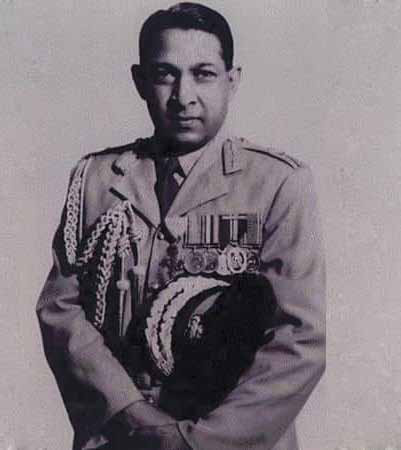
Jaffna Monitor hellojaffnamonitor@gmail.com 26 Mullaitivu. His father was Tamil, but Leonard, who hailed from Puttalam, may have received his education in Sinhala medium, which makes it difficult for him to converse in Tamil. From the beginning, it seems that very few Tamils joined the Sri Lankan Army. When did you join, and what motivated you to enlist? I joined the army in 1980, soon after completing my A/Ls. At the time, I was pursuing my ICMA qualification when I came across a newspaper advertisement announcing enlistment for Army Cadets to be trained in India. My father, Ignatius David, a teacher and cadet master who served as a Lieutenant in the National Cadet Corps during his tenure at S. Thomas’ College, Gurutalawa, had a profound influence on my passion for the military. Adding to this inspiration was a family friend and relative, Colonel Rajayogam, who was then serving as the Engineer Advisor to General Sepala Attygalle. In fact, we were staying at his house in Jaffna, and his visits, along with his stories of military life, played a Major General E. George Thevanayagam (right), in full ceremonial uniform, shaking hands with a fellow officer during a formal military event. Major General Leonard Mark
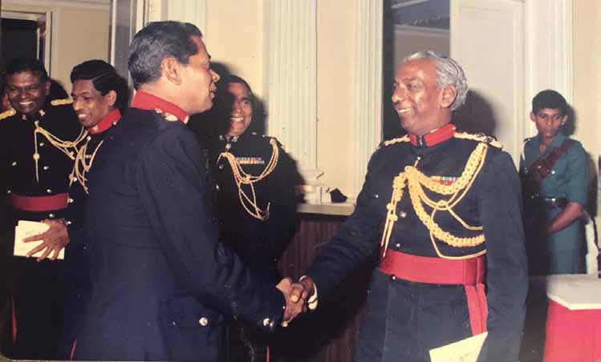
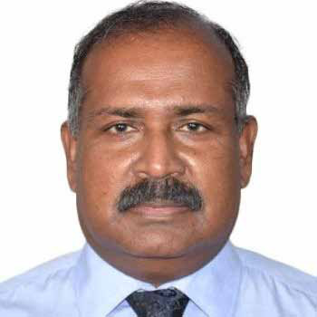
Jaffna Monitor hellojaffnamonitor@gmail.com 27 pivotal role in shaping my decision to join the armed forces. By 1980, ethnic riots against Tamils in 1956 and 1977 had already created deep divisions. With Tamil liberation movements gaining momentum and allegations that the military was being used to oppress and target Tamils, did you not see the army as part of the anti-Tamil machinery? At that time, institutions like the army, navy, and air force were regarded as national establishments that primarily attracted sportsmen who joined the forces to advance their careers. These institutions were seen more as government services than as instruments of ethnic oppression. Personally, I neither observed nor believed that they harbored systemic ethnic bias. However, I did notice a growing disconnect between the public and law enforcement personnel. Firstly, many officers could not speak the local language. Secondly, Tamils were significantly underrepresented in the forces, not even in proportion to their ethnic ratio. Another contributing factor was the practice of transferring police officers to the North as a form of punishment, as these postings were considered difficult or undesirable. Many of these officers were sent on disciplinary grounds, and their lack of commitment naturally led to friction and misunderstandings, further damaging the image of the security forces in Tamil-majority areas. Over time, this trend—combined with politically motivated decisions and the influence of certain commanders' promotions and appointments being tied to political agendas—began to alter public perception. These systemic changes gradually reinforced the narrative that the military was hostile toward Tamils. In fact, I was enlisted in the army while residing in Jaffna—something that, at the time, reassured me of the institution's impartiality. At the time you joined the army, wasn’t it already seen as an anti-Tamil force? Honestly, no. That perception did not exist when I joined the army. In my opinion, the turning point came in 1983 with the ambush in which 13 soldiers, including an officer, were killed. I later heard that one of the survivors is still alive and recently recounted his story. In fact, his testimony highlights how a Tamil doctor, Dr. Xavier from Jaffna Hospital, performed surgery on him and provided full assurance of his recovery. Fr. (Dr.) Hyacinth Singarayar David
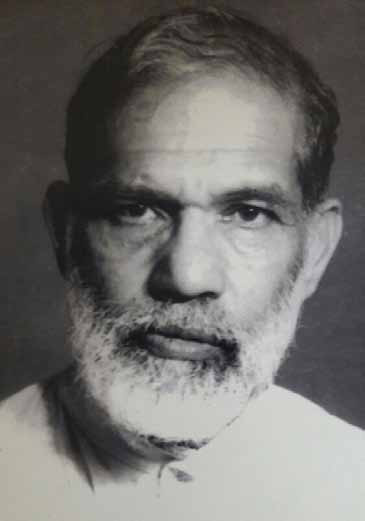
Jaffna Monitor hellojaffnamonitor@gmail.com 28 I joined the army in 1980 and lived near the Hospital Road-Kandy Road junction in Jaffna until 1985. During this time, I did not face any threats or adversarial remarks from any militant group. There were no attempts on my life, and I did not have any personal security, even though my friends knew I had joined the army. Meanwhile, my father, who was a teacher and lecturer, was a close friend of C.E. Anandarajah, the then-principal of St. John’s College, who was later assassinated by militants. After Mr. Anandarajah’s death, my father suffered a stroke. He was a strict teacher, the kind who wouldn’t hesitate to reprimand students, and he was devastated when he learned that the very younger generation he cared deeply for had killed such a respected educator. The loss shook him profoundly, leading him to decide to leave Jaffna. Until then, we had been living on Hospital Road, and I stayed with my family. You were the founder and former chairman of the Fr. H. S. David Foundation. What is your relationship with Fr. (Dr.) Hyacinth Singarayar David, the renowned scholar who mastered more than 30 languages? He was my periyappa—my father’s elder brother—a man of extraordinary intellect and profound wisdom. His legacy is one that I hold close to my heart. Tragically, he passed away under heartbreaking circumstances. I joined the army in the 1980s, a time marked by one of the darkest events in Jaffna’s history—the burning of the Jaffna Library in 1981. That horrific event, orchestrated by political thugs under the direct watch of certain politicians, remains etched in my memory. It was not merely a cultural loss for our people; it was a deeply personal tragedy for our families. At the time, my Periyappa was residing at St. Patrick’s College. On that fateful night, other priests showed him the flames engulfing the library. Among the volumes reduced to ashes
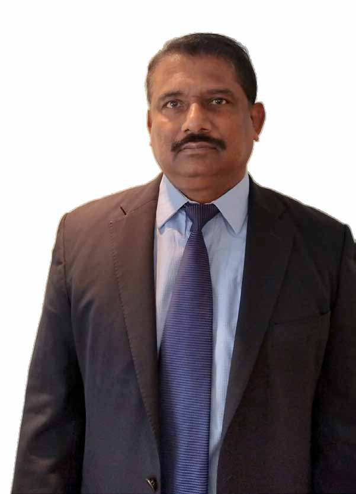
Jaffna Monitor hellojaffnamonitor@gmail.com 29 was his own research, painstakingly compiled over the years. The sight devastated him. As this was not an era of digital records, he faced the irretrievable loss of his life's academic work. We believe the shock and grief of this event contributed to his passing that very night. In his honor, our family, along with well- wishers, established the Fr. H. S. David Foundation. Under the leadership of the new chairman, Thushy David, the foundation has expanded its efforts, ensuring that Fr. David’s enduring contributions to humanity continue to inspire future generations. Regarding the burning of the Jaffna Library, do you believe the military was responsible for its destruction? It’s important to approach this issue with nuance. The burning of the Jaffna Library was not an act sanctioned by the military. Rather, it was carried out by a small group of antisocial elements, compounded by political thugs who get assistance from stooges in the forces, who acted more like mercenaries than representatives of their respective organizations. Their actions in no way reflected the values or conduct of the broader military forces. Similarly, there were isolated incidents of theft and looting by certain individuals. However, it would be neither fair nor accurate to hold the entire institution accountable for the misconduct of a few. The overwhelming majority of military personnel remained committed to their duties and had no involvement in these regrettable events. Your military career spans the entire timeline of Tamil militancy, from its inception, including the rise of the LTTE, to its annihilation in 2009. In your view, what factors contributed to the early flourishing of militancy? After J.R. Jayewardene became President of Sri Lanka in 1977, he introduced the concept of an open economy, marking a significant departure from the socialist- oriented policies of previous administrations. While this economic liberalization aimed to attract foreign investment and modernize the economy, it also heightened geopolitical tensions, particularly with India. Backed by the USSR, India viewed Sri Lanka’s growing alignment with Western allies, particularly the United States, as both a strategic and geographical threat. In response, it resorted to covert measures to counterbalance this shift. One of India’s key strategies was to exploit Sri Lanka’s internal divisions. At the time, Tamil youth— disillusioned by the policy of standardization, systemic discrimination, state-sponsored violence, and political marginalization—were already gravitating toward resistance. According to researcher Rohan Gunaratna, India seized this opportunity to keep Jayewardene’s administration in check, using its intelligence agency, the Research and Analysis Wing (RAW), to provide training and support to Tamil militant groups. Ironically, while India was arming and training these groups, it was simultaneously providing military training to Sri Lankan armed forces. Tamil militant groups received military training not only in India but also in Palestine, under the guidance of the Palestine Liberation Army (PLA). Without India’s intervention, it is unlikely that the Tamil militants' armed struggle would have reached the scale and sophistication it ultimately did.
Jaffna Monitor hellojaffnamonitor@gmail.com 30 However, this intervention had far-reaching consequences. What began as an initiative under Indira Gandhi’s leadership to counter Jayewardene’s pro-Western policies eventually backfired. This miscalculated strategy culminated in the assassination of Rajiv Gandhi in 1991, as India's own creation turned into a Frankenstein’s monster. You mentioned the politicization of the military. How did the politicization of the Sri Lankan military come about? For much of its early history, the Sri Lankan military operated with minimal political interference, maintaining a professional and apolitical stance. However, this began to change under former President J.R. Jayewardene. A key turning point came in 1981 when General Denis Perera, a widely respected and professional Army Commander, retired. Instead of adhering to the tradition of promoting senior officers based on merit, Jayewardene appointed his confidant and relative, Major General Tissa Weeratunga, as his successor. This decision marked the beginning of political influence creeping into the upper ranks of the military. Several senior Brigadiers were denied promotions, effectively forcing them into early retirement—a move widely perceived as politically motivated and aimed at consolidating loyalty within the armed forces. Before becoming Army Commander, then- Brigadier Weeratunga played a pivotal role in the government’s response to Tamil militancy in Jaffna. In 1979, he was appointed Overall Operational Commander with sweeping powers under the Prevention of Terrorism (Special Provisions) Act No. 48 of 1979. His aggressive approach, rather than quelling tensions, further inflamed the situation, escalating violence instead of de-escalating it. This trend continued in subsequent years, with political influence tightening its grip on military leadership. Only a handful of Army Commanders managed to resist this pressure. One notable exception was General Srilal Weerasooriya, who upheld professionalism and refrained from political involvement during his tenure. While J.R. Jayewardene was the first to introduce direct political interference in the military, this influence reached unprecedented levels under the Rajapaksa brothers, particularly Gotabaya Rajapaksa. Under their leadership, the military became deeply politicized, fostering a culture where loyalty to political leaders often took precedence over national security priorities. What Kind of Interference did the Rajapaksa Brothers Introduce in the Military? As Secretary of Defense, Gotabaya strategically positioned individuals within the military who were loyal to him and his brothers, aligning key military leadership with their political objectives. One of the most evident examples of this interference was Gotabaya’s favoritism toward the Gajaba Regiment, his former unit. Under his leadership, the regiment was elevated to a position of significant political influence. Promotions within the regiment—and for his political allies—were expedited, often bypassing traditional protocols and sidelining senior officers. This favoritism fostered a "my- man" system, where certain individuals were privileged while others felt marginalized. The strained relationship between then-retired
Jaffna Monitor hellojaffnamonitor@gmail.com 31 Lt. Col. Gotabaya Rajapaksa and then-Lt. Gen. Sarath Fonseka, who was the Army Commander at the time, further deepened divisions within the military. Their dynamic was marked by clashing egos and competing priorities. Their disagreements became public, with Gotabaya actively working to undermine Gen. Fonseka. He promoted officers who were antagonistic toward Fonseka, bypassing both seniority and merit in favor of political loyalty and personal allegiance. Competent officers deserving of promotion were overlooked in favor of those who aligned with Gotabaya’s personal agenda. The Rajapaksas’ approach institutionalized a culture where political loyalty took precedence over merit, fundamentally undermining the military’s independence and integrity. Did the tensions between Gotabaya Rajapaksa and Sarath Fonseka arise while Fonseka was still the Army Commander? This tension was separate from their later, more publicized fallout when Fonseka decided to contest the presidential election against Mahinda Rajapaksa. Their disagreements had already emerged during their overlapping roles in the military hierarchy. The primary cause of their strained relationship appears to have been an ego clash. Ironically, Fonseka was a senior officer in the military while Gotabaya was still a junior officer. This prior dynamic influenced their working relationship later, when Gotabaya, as Defense Secretary, held greater authority over Fonseka. Adding to the complexity was their regimental affiliation. Fonseka belonged to the Sinha Regiment, while Gotabaya was from the Gajaba Regiment. During Gotabaya’s tenure
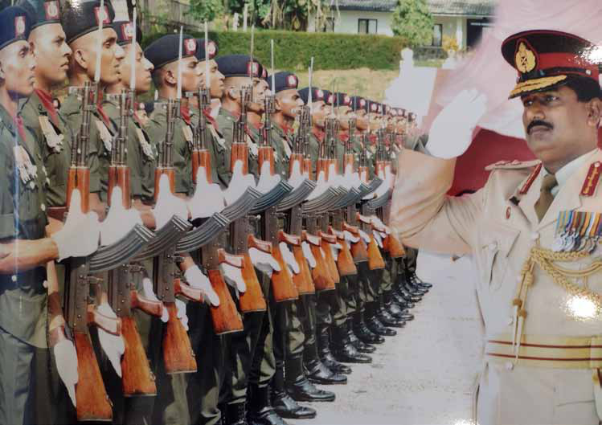
Jaffna Monitor hellojaffnamonitor@gmail.com 32 as Defense Secretary, his blatant favoritism toward the Gajaba Regiment—especially in prioritizing its officers for promotions and key positions—further deepened the divide between the two. Do you believe Sarath Fonseka's arrest after his defeat in the 2010 presidential election was an injustice? The idea that we reap what we sow holds some truth, yet, setting aside philosophical perspectives, what happened to General Sarath Fonseka was undeniably a grave injustice. According to military regulations, any allegations of treason should have been addressed through a formal court-martial proceeding, adhering to established protocols. However, in my view, the accused was not given a fair opportunity to defend himself. In Fonseka’s case, due process was blatantly disregarded. His arrest was abrupt and forceful, tarnishing the reputation of the military, while the subsequent legal proceedings lacked transparency, deviating from both military norms and the principles of natural justice. It was later revealed that Gen. Fonseka was accused of acting against national interests, particularly concerning the White Flag incident. The Rajapaksas alleged that he attempted to disclose sensitive information that could have been detrimental to Sri Lanka. However, at the time of the alleged incident, Fonseka was in China, raising serious doubts about whether he had been deliberately kept away as the conflict neared its conclusion— leaving many questions unanswered. Regardless of differing opinions on Fonseka’s conduct, the manner in which he was treated—stripped of his dignity and subjected
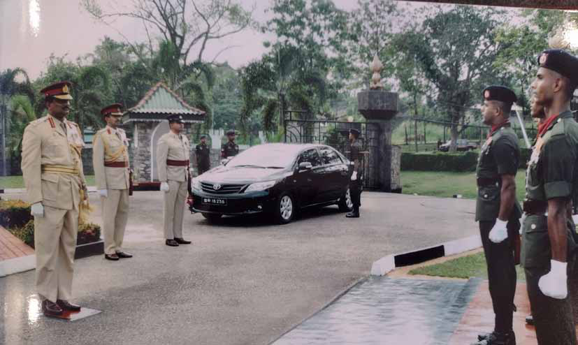
Jaffna Monitor hellojaffnamonitor@gmail.com 33 to a highly questionable legal process—was deeply troubling. Did the White Flag incident happen or not? I cannot provide firsthand confirmation, as I was not present at the site during the events in question. However, based on widely discussed accounts within the military, it appears that the White Flag incident did take place. From what I have heard, it is claimed that a deal was negotiated between Basil Rajapaksa and members of the LTTE’s second-tier leadership, with assurances that they would be allowed to surrender safely. However, it is alleged that Gotabaya Rajapaksa later reneged on this agreement and ordered their execution. Whether this decision was justified remains a highly contentious issue, with conflicting perspectives and narratives. Another critical aspect often overlooked is the role of internal betrayals within the LTTE itself. I have heard that some members of Prabhakaran’s inner circle reportedly provided intelligence suggesting that allowing these individuals to survive posed a significant risk. This information is believed to have influenced the course of action that led to the White Flag incident. During the final years of Prabhakaran’s leadership, several cracks began to emerge within the LTTE. A significant illustration of this was the killing of Tamilselvan, the LTTE’s political head. This incident is widely regarded as one that could not have occurred without insider information. The precision with which Tamilselvan’s exact location was targeted during a Sri Lankan Air Force strike appeared almost impossible without highly specific intelligence. In your view, who is responsible for the victory against the LTTE? Was it Gotabaya, Fonseka, or someone else? The downfall of the LTTE cannot be credited to any single individual—it was the result of a complex interplay between internal weaknesses within the LTTE and coordinated external efforts. The LTTE leadership lacked the strategic foresight to sustain a prolonged war effort. Leading an armed struggle—especially one that claims to represent a minority—requires sustained international backing. Yet, the LTTE convinced itself that it could wage war in isolation, a miscalculation that ultimately proved fatal. In its early years, the LTTE operated as a highly effective guerrilla force, making it nearly impossible for the Sri Lankan military to predict their attacks. But over time, they transformed into a conventional army, which demanded substantial external support in terms of logistics, strategy, and firepower. Their failure to secure this support turned into a major vulnerability. Any armed movement that spans over two decades must evolve to remain effective. The LTTE’s inability to adapt left even its supporters questioning the viability of their struggle. A pivotal moment in their decline was the defection of Eastern Commander Karuna, one of their most formidable leaders. His departure didn't just weaken the LTTE militarily—it exposed deep internal divisions, further accelerating their downfall. Meanwhile, the Sri Lankan military held overwhelming advantages—superior manpower, devastating firepower, fighter jets dominating the skies, naval patrol boats securing the seas, and a vast logistical network
Jaffna Monitor hellojaffnamonitor@gmail.com 34 sustaining its operations. Most critically, it had the backing of powerful foreign allies, further tipping the scales in its favor. By late 2008, when Kilinochchi fell, the LTTE leadership should have realized they were fighting a losing battle. Their last remaining stronghold, Mullaitivu, left them with just two choices—either defend it or face total annihilation. Instead of launching a direct assault, the military strategically encircled and isolated them, cutting off external support and squeezing them into an inescapable trap before delivering the final blow. The LTTE leadership, however, failed to comprehend the gravity of the situation and made no meaningful attempt to alter their course. In the early stages, the Sri Lankan government, with India’s alignment, leveraged U.S. counterterrorism strategies to dismantle the LTTE’s international operations. One of the most decisive turning points was the assassination of Rajiv Gandhi. That single act irreversibly turned India against the LTTE, stripping them of a crucial ally. The global landscape also shifted post-9/11, with international counterterrorism efforts leading to frozen LTTE assets and the systematic dismantling of their arms smuggling networks. Several of their arms shipments were intercepted and destroyed in international waters, crippling their ability to fight. Yet, even as they grew increasingly isolated, the LTTE leadership remained blind to the inevitable. India, though not directly involved in the final phase, played a crucial role by providing intelligence and satellite imagery to the Sri Lankan military. International intelligence agencies, too, played their part in curbing LTTE funding and breaking their global networks. Given these factors, the LTTE’s downfall was not the work of one man—it was a result of strategic military planning, international cooperation, and the LTTE’s own internal flaws. General Fonseka, a battle-hardened infantryman, played a key role in deploying snipers and long-range fighting patrols that severely weakened the LTTE’s leadership. Gotabaya’s role, on the other hand, was largely in assisting his brother, Mahinda Rajapaksa, by coordinating military operations to align with political objectives. But if anyone truly deserves credit, it is the thousands of soldiers, sailors, and airmen who fought and bled on the battlefield. Many disabled veterans have been reduced to mere political talking points, celebrated when convenient and forgotten when not. The same fate befell members of the LTTE and other militant groups. They were the real warriors of the conflict. I have always believed that the true heroes are the unknown soldiers who perished in battle. Many of those who now call themselves ‘war heroes’ do so for political mileage rather than genuine valor. Except for a few rare exceptions, these so-called war heroes are, in reality, nothing more than war zeros. Had the LTTE resorted to guerrilla warfare after losing Kilinochchi, do you think they would still exist today? If the LTTE had released the civilians and retreated into the jungles after the fall of Kilinochchi, they would have scattered, making it far more difficult for the military to eliminate them entirely. Guerrilla warfare would have allowed them to regroup, launch sporadic attacks, and prolong their survival. By avoiding concentration in a single location, they could have posed a continuous, invisible
Jaffna Monitor hellojaffnamonitor@gmail.com 35 threat, significantly complicating the military’s efforts to achieve a decisive victory. However, the military’s key advantage during the final phase of the war was that the LTTE leadership and fighters were cornered into a small stretch of land. Crucially, there was no attempt by the LTTE leadership to revert to guerrilla warfare. Instead, they remained trapped, and their decision to stay in one place made them an easy target for the Sri Lankan military. Sporadic escape attempts were all thwarted. Another critical factor was the physical and mental state of their second-tier leadership. Many of these commanders had joined the LTTE in their 20s and 30s when they were physically agile, resilient, and mentally sharp. However, by the final phase of the war, they were in their 50s or older, many with families. After decades of fighting, they either should have transitioned leadership to a younger generation or adapted their strategy. In their 30s, they could endure the hardships of jungle warfare and engage in relentless guerrilla operations, but how many could sustain that same intensity and endurance in their 50s? The LTTE leadership failed to implement a strategic transition, either in leadership or military tactics. They neither empowered younger leaders nor adjusted their approach to align with evolving global realities. Instead, they became predictable and vulnerable, ultimately sealing their fate. From a military standpoint, the LTTE had lost its resilience in the final phase of the conflict, making it significantly easier for the Sri Lankan forces to eliminate them. Consider this: LTTE leaders and their fighters were
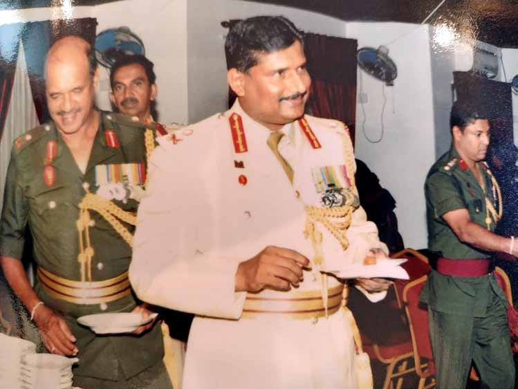
Jaffna Monitor hellojaffnamonitor@gmail.com 36 confined to a narrow strip of land, completely surrounded by the military on all sides. They forcefully held civilians with them, using them as human shields. For the Sri Lankan military, the strategy became straightforward—rescue the civilians and eliminate the LTTE. When you know exactly where your opponent is and can effectively confine them with no viable escape strategy, the outcome becomes inevitable. From a military perspective, what more could you ask for? It was a situation perfectly set for the LTTE’s total annihilation. When were the strategies to annihilate the LTTE formulated? The foundation for the LTTE’s ultimate military defeat was inadvertently laid by their own strategic miscalculation during the 2005 presidential election. By preventing Tamil voters in the North from casting their ballots—allegedly in exchange for financial incentives from the Rajapaksa camp—the LTTE effectively ensured Mahinda Rajapaksa’s victory. This decision, aimed at blocking Ranil Wickremesinghe from gaining power, ultimately backfired, triggering a series of events that culminated in the LTTE’s downfall in 2009. The next phase of this strategy involved the return of Sri Lankan military expatriates with U.S. citizenship, including Gotabaya Rajapaksa, who played a pivotal role in leading military operations and providing strategic direction. This development signaled a tacit alignment between U.S. policy—particularly its efforts to freeze LTTE assets—and the Sri Lankan government’s military preparedness and resolve. What was behind the strategy to eliminate the LTTE, and why was the U.S. so invested in this effort? This was shaped by a confluence of geopolitical factors, particularly in the aftermath of the September 11, 2001, terrorist attacks. These attacks fundamentally reshaped global perspectives on terrorism, prompting the United States to adopt a more aggressive stance against armed insurgent movements worldwide. The involvement of Sri Lankan expatriates holding U.S. citizenship, such as Gotabaya Rajapaksa—who returned to assume the pivotal role of Secretary of Defence—further strengthened military cooperation between Sri Lanka and the United States. This collaboration facilitated intelligence sharing and strategic coordination, bolstering Sri Lanka's military operations. Additionally, India's intelligence agency, RAW, played a crucial role by providing satellite imagery and logistical guidance, significantly enhancing the effectiveness of Sri Lankan military campaigns. Collectively, these efforts culminated in a coordinated international strategy that severely weakened the LTTE's operational capabilities, ultimately leading to its defeat. So, you mean to say the early assignment of eliminating the LTTE was crafted by America? Not by the U.S. alone—both the U.S. and India, which became strategic allies after the fall of the USSR, worked together. Based on the global geopolitical landscape at the time, it can be inferred that the CIA and RAW likely collaborated in assisting the Sri Lankan government in executing this plan.
Jaffna Monitor hellojaffnamonitor@gmail.com 37 Is it true that the LTTE was paid to prevent people in the North and East from voting in the 2005 presidential election, which led to Mahinda Rajapaksa's victory? Yes, in my view, this must be true. Reports suggest that the funds were sent to Vavuniya and collected by LTTE representatives. It is believed that the specific vehicles involved traveled via Puttalam, and the operation was allegedly known to the late Lt. Commander Sripathi Sooriyarachchi, who was then the MP for Chilaw. Following his fallout with Mahinda Rajapaksa, Sripathi Sooriyarachchi publicly stated that he would reveal details of the transaction— specifically, how the funds were transferred to the North. However, before he could do so, he died under suspicious circumstances in an accident. Who collected the money on behalf of the LTTE? The LTTE wouldn’t send senior commanders to receive the money. They would have delegated such tasks to mid-level operatives or trusted representatives. Sripathi Sooriyarachchi died in a car accident. Was there any mystery surrounding his death? As soon as Sripathi Sooriyarachchi began openly discussing the money allegedly given to the LTTE by the Rajapaksas, it became evident to many that his life was in danger. When news broke of his death in an accident, suspicions arose almost immediately— for obvious reasons. However, his death remains shrouded in mystery, both in terms of its cause and the circumstances leading up to it. At a recent press briefing in Jaffna, Namal Rajapaksa reportedly stated that his father, Mahinda Rajapaksa, was deeply affected by the killing of Prabhakaran’s 10-year-old son, Balachandran, after his capture by the army. A journalist who recently met Mahinda also noted that he remains troubled by this incident. Given these accounts, who do you believe was responsible for Balachandran’s killing, and what could have led to the decision to execute an unarmed child in custody? Additionally, considering that the military
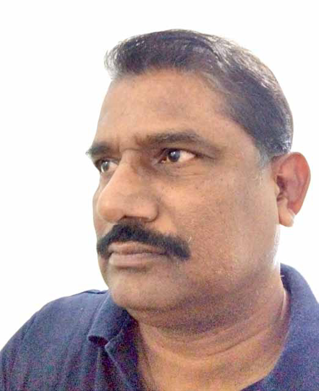
Jaffna Monitor hellojaffnamonitor@gmail.com 38 spared Rohana Wijeweera’s sons despite its brutal conflict with the JVP, how do you interpret this contrast? Allow me to outline the rules governing the conduct of hostilities, which primarily aim to protect civilians. A principle I firmly believe it states: “You cannot give life to the dead, nor can you take life from the living.” Though I do not know the perpetrator or the coward behind this act, the killing of an unarmed person is absolutely unacceptable, and the murder of a child is an unforgivable atrocity. Such acts—whether committed by military personnel or militant groups—are reprehensible and dehumanizing. Certain actions during armed conflicts can never be justified or excused. Take, for example, the tragic death of 10-year- old Balachandran (the son of Prabhakaran) or the horrific Aranthalawa Massacre, where most of the victims were young novice monks—children who cannot be seen as combatants in any form. On July 24, 1988, I personally witnessed the remains of an infant, the child of a then-DIG’s sister, after his ancestral home was burned down in Poddala, Galle. Similarly, the mass graves of murdered children from Embilipitiya Maha Vidyalaya in Sooriyakanda stand as a grim reminder of our disregard for humanity. What do all these acts reveal? That our society has descended into a cycle of revenge, vengeance, and violence. During times of conflict, some perpetrators exploit the chaos to commit atrocities. If such acts are ignored or left unaddressed, society will inevitably face even worse consequences in the future. These actions are heinous and must be investigated— otherwise, they risk becoming an acceptable norm for all wrongdoings. To answer the second part of your question, one must consider the circumstances— specifically, the location and intensity of the conflict, as well as where their families were residing at the time. From my understanding, in November 1989, Wijeweera was hunted down and arrested while living in disguise at a tea plantation. It was believed that Wijeweera's wife and six children were confined to a naval barracks. A similar course of action was taken for the Sea Tiger head Soosai’s wife, with her children detained at Trincomalee Dockyard and subsequently released. While Prabhakaran’s family was caught up and, following an assault, perished under battle conditions, contextually, these were two vastly different environments. However, one cannot comprehend or provide any explanation for the demise of Prabhakaran’s son. What is your estimation of Prabhakaran and the LTTE? One must acknowledge that Prabhakaran was a skilled fighter, and to a significant extent, the LTTE was a product of both the actions of successive Sri Lankan governments and India's geopolitical calculations. I can confidently say that Prabhakaran emerged as the most dominant leader among Tamil militant groups, but he made numerous strategic miscalculations. While I wouldn’t say that the formation of the LTTE itself was a mistake— they may have had their reasons—the decision to eliminate other Tamil militant movements was a grave error. I vividly remember seeing the bodies of TELO and other militant group members displayed near Windsor Theatre in Jaffna. When I saw that, I realized that these groups were heading in the wrong direction. Their actions convinced me that they could never succeed in their vision of a divided state. Another significant issue within Tamil society
Jaffna Monitor hellojaffnamonitor@gmail.com 39 is the caste system—a deeply ingrained problem that no one wants to confront, even today. It is impossible to build a prosperous future while clinging to caste-based divisions and prejudices. As for me, I am a proud Tamil. Had the LTTE taken a more pragmatic approach and pursued their cause more responsibly, they might have achieved something meaningful—similar to the JVP’s political evolution. However, their rigid decisions and violent strategies ultimately led to their downfall. Their miscalculations overshadowed their initial intentions, causing them to lose the very support of the people they claimed to represent. How do you assess the LTTE as a fighting force? Were they valiant fighters? They were highly skilled fighters, exceptionally trained and fiercely committed. The suicide bombers were prepared to sacrifice themselves without hesitation. The Sea Tigers, in particular, displayed remarkable dedication, excelling in naval warfare and introducing numerous innovative tactics at sea. The LTTE demonstrated extraordinary ingenuity, constructing submarines, assembling satellite stations, and developing improvised vehicles— such as motorbikes running on kerosene— while transforming ordinary materials into sophisticated weaponry. However, while their innovations in warfare were undeniably impressive, my lingering question remains: why was such immense talent and capability not channeled into more constructive fields? The Jaffna Tamil community is inherently known for its resilience and industrious nature. I recall how farmers would climb onto a shadoof (Jyh) as early as 4 a.m. to draw water, toiling tirelessly until 10 a.m.—a testament to their unwavering dedication and perseverance. The LTTE undeniably altered the perception of Sri Lankan Tamils, who were once seen as a passive and docile community. They instilled a spirit of resistance and defiance, proving that they could fight back against oppression. However, this transformation came at an immense cost, with little tangible gain. Their sophistication in arms development and strategic operations was truly remarkable. Yet, the ultimate question remains: why did such extraordinarily talented individuals choose this path? The LTTE’s fighters possessed the intelligence, creativity, and discipline to thrive in fields like technology, entrepreneurship, and innovation. Some of their brightest minds could have risen to global prominence—perhaps even reaching the heights of someone like Sundar Pichai, the CEO of Google. Instead, their potential was consumed by destruction and war—a path that proved to be a non-recoverable investment. You identify yourself as a proud Tamil. We have even seen pictures of you wearing a Veshti and attending school functions while still serving in the army. Didn’t you feel conflicted, given that the army was often viewed as an oppressive force against Tamils, while the LTTE was seen as fighting for the Tamil cause? Didn’t you face a dilemma being part of that army? You can ask anyone who lived in Puttalam or Vavuniya during my tenure in the army—did any injustice occur to the Tamils or any other community under my command? The answer will be no. I did not allow any harm to come
Jaffna Monitor hellojaffnamonitor@gmail.com 40 to them. If there is any Tamil who claims that the army harassed or mistreated them while I was in charge in Vavuniya, I challenge them to come forward. It simply did not happen under my command. I never identified myself as someone from the South. Even within the army, I always upheld my identity as a proud Tamil and openly stated that I was from Jaffna. I made it a point to visit religious dignitaries and places of worship in Vavuniya, showing my respect and actively participating in religious ceremonies. Until the very end, I have stood tall, firmly asserting my Tamil identity—"Be a Tamil, stand tall, and never bow down." That has always been my principle, guiding my actions throughout my service in the army. Were there any challenges being a Tamil in a predominantly Sinhala- majority army? Absolutely. Such challenges are inevitable anywhere in the world. Instead of seeing them as obstacles, take them as opportunities to move forward. Wasting time tackling every issue of justice will only slow you down. During my service in southern Sri Lanka during the JVP insurrection, I encountered many instances where innocent Sinhala youth were detained on suspicion. After thorough evaluations, I ensured the release of several young men who had no proven ties to the rebellion. Likewise, while serving in the North and East, I adopted the same approach— working to release innocent Tamil youth who
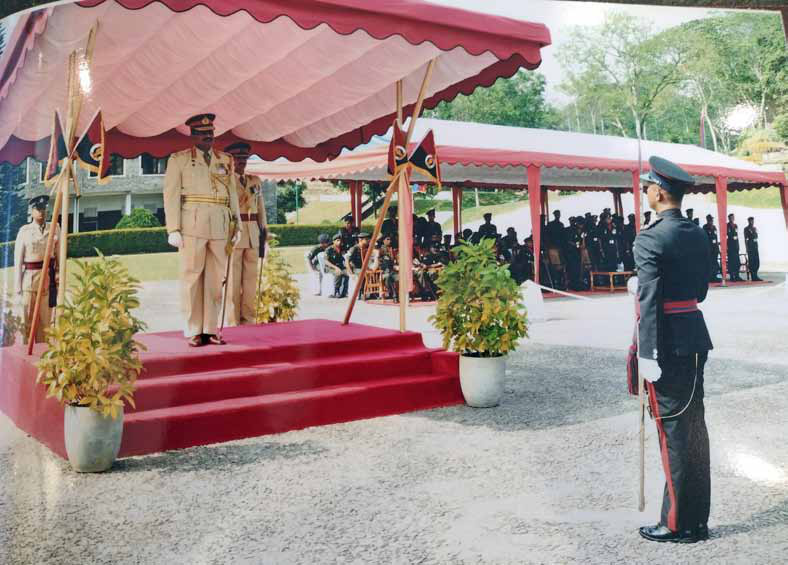
Jaffna Monitor hellojaffnamonitor@gmail.com 41 had been wrongfully detained or held without sufficient evidence of any connection to the LTTE. What stood out, however, was the difference in perception. When I secured the release of Sinhala youth in the South, it was regarded as routine justice and raised no concerns. But when I did the same for Tamil youth in the North, it often provoked suspicion and led some to question my motives. In fact, some even suspected me of having links to the LTTE. Despite this, the soldiers under my command had unwavering trust in me. I had earned their respect, and they followed my orders without hesitation. My faith in God remained unshakable, and I carried out my duties with that faith as my guiding principle. Being a Tamil in the army came with its own barriers—I was denied rightful promotions and other privileges. However, I never let that discourage me. Over time, God ensured that I received everything I deserved. I have always believed that if your principles and intentions are right, you will ultimately succeed. Life, in many ways, is like a marathon—there will be slowdowns and moments of falling behind, but with resilience, persistence, and unwavering integrity, you will reach your goal and emerge victorious. Before retiring from the army, we heard that you submitted a 13-point reconciliation plan to the then Rajapaksa government. What happened to it? I submitted a 13-point reconciliation and revival plan to then-President Mahinda Rajapaksa through the Army Commander at the time. I believed the plan outlined a genuine framework to address the root causes of the conflict and heal the wounds of those affected by the war. However, there was no serious effort to consider or implement it. Instead of prioritizing reconciliation, the leadership chose to exploit the post-war environment for political gain. The JVP insurgency in the South ended in a manner similar to—but with less intensity than—the LTTE conflict. Yet, there were no victory celebrations or medals awarded upon its conclusion. Why? Because it is not ethical to celebrate the demise, misery, or pain of others. This should not be confused with honoring fallen comrades or commemorating those who sacrificed their lives. When the JVP insurgency was quelled, the military established a genuine inquiry to investigate the events and hold responsible individuals accountable. Why was a similar effort not undertaken following the end of the Northern conflict? The military’s role is to protect and defend sovereignty and territorial integrity. In both cases—the JVP and LTTE insurgencies—the army was deployed to suppress an armed rebellion. However, what was lacking was a structured post-conflict rehabilitation process for those involved. Just as surrendered LTTE cadres underwent rehabilitation and reintegration into society, soldiers who fought in the war should have received similar psychological and social support. Their reintegration into civilian life was equally crucial but was largely ignored. One of the long-term consequences of this failure can be seen in the "grease man" incidents—cases involving traumatized young men, many of them former soldiers, who engaged in erratic and criminal behavior due to unresolved psychological scars from the war. Even recent violent incidents in Mannar
Jaffna Monitor hellojaffnamonitor@gmail.com 42 highlight the lasting effects of neglecting post- war trauma. Had a proper commission of inquiry been established after the war, it could have identified excesses and irregularities within the military, held individuals accountable, and provided rehabilitation where necessary. This would have enabled both soldiers and ex-combatants to reintegrate into society with dignity and ensured they had the resources to rebuild their lives. If such measures had been implemented, Sri Lankan society today would look very different. However, for political reasons, the Rajapaksa brothers chose not to take these necessary steps. This decision left lasting scars—not just on individuals, but on society as a whole. On what basis do you say that the army should have been rehabilitated? Globally, it is well-documented that 5–10% of actively engaged combatants develop some form of mental strain or trauma, commonly referred to as Post-Traumatic Stress Disorder (PTSD). This condition has been medically proven and widely studied. Even after the war, I witnessed firsthand how soldiers who had participated in intense combat would instinctively hide or take cover at the sound of firecrackers. I had young soldiers in my unit who reacted in this manner, displaying clear signs of trauma. Many army personnel who took part in the war suffered from PTSD and should have undergone proper rehabilitation through structured mental health programs. Although some NGOs attempted to provide counseling, these initiatives were largely ineffective due to a lack of adequate government support. Unfortunately, proper rehabilitation was never prioritized, as the Rajapaksa administration was more focused on capitalizing on the war victory for political gain rather than addressing the mental health needs of its soldiers. What were the key points in your 13-point proposal? Here are some of the most critical recommendations from my proposal: Justice and Accountability People, particularly within the Tamil community, seek justice and accountability for the atrocities committed by all sides. A fair, transparent, and balanced approach to justice is essential—one that addresses the full scope of human rights violations resolves cases of those missing in action, and facilitates the release of individuals held in prolonged custody, regardless of their political affiliations. Victory Parade The victory parade in 2009, following the defeat of the LTTE, was, in my view, highly unnecessary if the operation was genuinely a "humanitarian" mission. Such parades carried significant political and social undertones. After the war, where did we stand in terms of national identity as Sri Lankans? The government used the event to assert its authority, framing the end of the conflict as a "victory." But victory over whom? The nation did not celebrate the conclusion of the JVP insurrection—why not? Many, especially within the Tamil community, saw the parade as a symbol of their marginalization and a reminder of the heavy toll of the war on civilians, including concerns over human rights abuses and the treatment of
Jaffna Monitor hellojaffnamonitor@gmail.com 43 ethnic minorities. I believe this event became an obstacle to reconciliation. While military parades are important for national pride, I question whether they should be held after an internal conflict that cost the lives of our own countrymen. Common War Monuments War monuments should honor all who were affected—armed forces, police, militants, and civilians alike. Only then can people truly reflect on the consequences of such a devastating conflict and its long-term impact. Strategic Military Presence The army should not be completely withdrawn after the conflict, but its presence should be strategically reduced. Instead of maintaining a heavy military presence solely in the North and East, military cantonments should be established in each province, ensuring a balanced national security approach. Future of Ex-Soldiers and Ex-Combatants The government should invest in the future of both skilled and unskilled ex-military personnel by providing career training and second-career opportunities. Given their discipline and training, they could be grouped for national projects, contributing to the country’s development. Such initiatives should extend to retiring officers and soldiers to uphold societal integrity and long-term stability. Return of Occupied Land All civilian lands seized by the military during the war should be returned to their rightful owners. The prolonged military occupation of private land fuels resentment and stands as an obstacle to true reconciliation. Ethnic Representation in the Military There must be adequate representation of Sri Lankan Tamils in the military. Only then will the Tamil community feel a sense of ownership over the armed forces and view them as a national institution rather than a symbol of ethnic dominance. As a retired military officer with three decades of service who has lived through the conflict, I see the journey of healing and rebuilding as both a personal and national responsibility. In the post-war period, the military engaged in numerous projects in the North and East, winning the hearts and minds of the people. Unfortunately, politicians have often been reluctant to acknowledge and appreciate such efforts. The government faces a monumental task in ensuring peace, stability, and inclusivity while addressing the socio-economic and emotional scars of the past. A firm commitment to national unity and a long-term, sustainable reconciliation process will be key to Sri Lanka’s healing and future prosperity.
Jaffna Monitor hellojaffnamonitor@gmail.com 44 Richard de Zoysa’s Murder and the Era of Fear: "Rani" Revisits Sri Lanka’s Past T he haunting epigraph, "A mother stops living when her children are dead," forms the bedrock of Asoka Handagama's Rani, a stylish biographical drama thriller. The film provides a gripping portrait of Dr. Manorani Saravanamuttu's relentless quest for justice in the wake of her son's murder – the acclaimed journalist Richard de Zoysa. Rani delves into a harrowing period of Sri Lankan history, resonating with a chilling contemporary relevance concerning political violence and impunity. Nearly 35 years have passed since Richard de Zoysa's abduction and BY: Dr. Shane Halpe
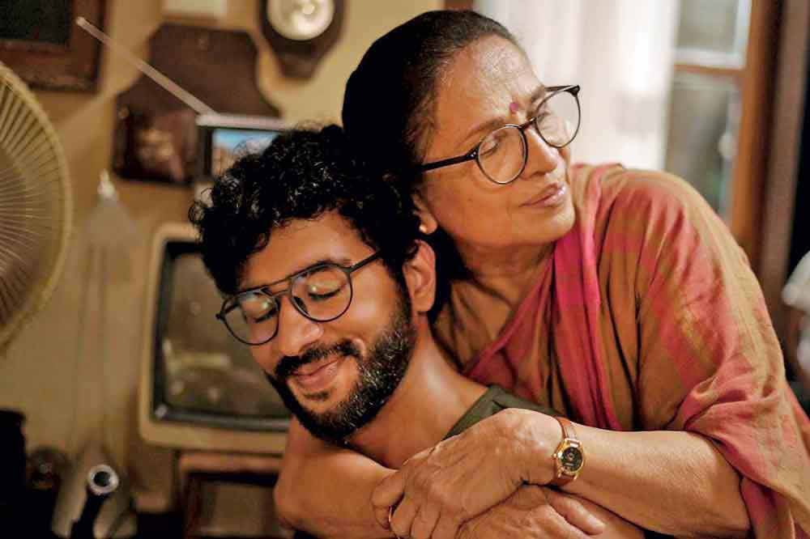
Jaffna Monitor hellojaffnamonitor@gmail.com 45 murder on February 18, 1990. A journalist, author, human rights activist, and actor, de Zoysa's death sent shockwaves through Sri Lanka. Widely believed to be the work of a death squad linked to elements within the then-government of President Ranasinghe Premadasa, his killing was not an isolated incident. It occurred within a broader context of escalating human rights violations perpetrated by the government in its efforts to suppress the insurgency. While the precise motive remains officially classified, speculation persists that de Zoysa possessed incriminating information regarding these abuses. Janaka Mallimaratchi's memoir, "Rathu Anguru," recounts de Zoysa's growing distress in the weeks leading up to his death, his despair over the mounting youth casualties, and his fervent desire to halt the violence. "Rani" opens with the grim discovery of Richard's body on Moratuwa beach. For Mano, a dedicated medical officer delivering babies, the loss of her only child is devastating. Her now-famous statement, "I was lucky that my son was brought back to me by the sea," poignantly echoes the anguish of countless families of the disappeared who were never afforded such closure. Flashbacks depict the harrowing abduction, the armed men storming her home, and the terrified silence of neighbors – a scene that powerfully captures the helplessness of ordinary citizens in the face of state-sponsored terror. The film then follows Mano's arduous journey as she navigates a system designed to protect the perpetrators, not the victims. For those born after this period, like myself, the film is a crucial historical document. "Rani" has reignited conversations about political assassinations and the pervasive climate of fear that gripped Sri Lanka during this era. The film offers a visceral and immersive experience, drawing the viewer into Mano's world of grief, despair, and unwavering determination. Swarna Mallawarachchi's masterful portrayal of Dr. Manorani is nothing short of breathtaking. She embodies the character's strength, vulnerability, and unwavering resolve, taking the audience on an emotional journey that spans the spectrum of human experience. Mallawarachchi's nuanced performance transcends mere acting; it is a powerful testament to a mother's love and a citizen's fight for justice. Handagama skillfully weaves in recognizable figures from Sri Lankan politics – Lalith Athulathmudali, President Premadasa, Mangala Samaraweera, and a young Mahinda Rajapaksa – adding layers of historical intrigue. The meticulous attention to detail, from period newspapers and television programs to everyday objects like vintage cream soda bottles, creates a palpable sense of nostalgia and authenticity for those who lived through this era. Rehan Amarathunga delivers a compelling performance as Richard de Zoysa, and Sajitha
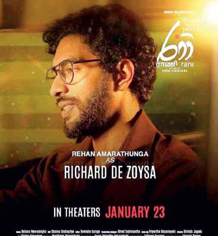
Jaffna Monitor hellojaffnamonitor@gmail.com 46 Anuththara shines as his friend, Gayan. The makeup artistry, particularly in bringing Ranasinghe Premadasa to life on screen, is commendable. The film also excels in its portrayal of the burgeoning friendship between Mano and a young mother whose baby she delivers, adding a human touch to the larger political narrative. Mayura Kanchana's portrayal of Karu, Dr. Mano's loyal helper, further enhances the film's authenticity. Richard de Zoysa's work as the Colombo correspondent for IPS (Inter-Press Service), reporting on human rights abuses, undoubtedly posed a threat to the government. Rumors of his involvement in a satirical play critical of Premadasa, "Mei Kawuda, Mokada Karanne," (Who is he and what is he doing?) which was never staged, further underscore the risks he faced. The disappearance and presumed murder of the play's producer, Lakshman Perera, adds another layer of tragedy to the story. The film subtly alludes to this connection, perhaps through the character of Gayan. De Zoysa's assassination is meticulously documented in "Under Siege; Mass Media in Sri Lanka," which details the abduction, the flawed investigation, and the allegations against high-ranking officials. The book also highlights the threats faced by Mano and her lawyer, as well as the attempts to link de Zoysa to the JVP. The fact that Richard's body was recovered, unlike so many other victims of enforced disappearances, underscores the significance of his case. De Zoysa's legacy extends beyond his journalism. An award for independent journalism was established in his name by IPS. He is also the inspiration for Rajiva Wijesinha's novel, "Limits of Love," and features prominently in Shehan Karunatilaka's Booker Prize-winning novel, "The Seven Moons of Maali Almeida." His acting career, notably his role in Lester James Peries's "Yuganthaya," further cements his place in Sri Lankan cultural history. While the film excels in many aspects, some casting choices fall short. Sanath Gunathilaka's portrayal of Lalith Athulathmudali, while technically proficient, feels more like an impersonation than a genuine characterization. Similarly, the portrayals of Mangala Samaraweera and Mahinda Rajapaksa lack depth and feel somewhat exaggerated.
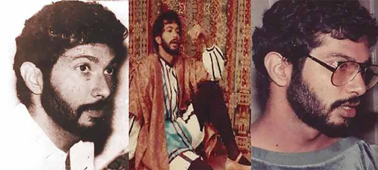
Jaffna Monitor hellojaffnamonitor@gmail.com 47 The film effectively depicts Mano's friendship with Athulathmudali and her grief at his assassination, highlighting the perilous political climate of the time. History suggests a complex and ultimately antagonistic relationship between Athulathmudali and Premadasa. "Rani" powerfully evokes empathy for Mano and the countless mothers who have lost children to political violence. However, the film's ending feels rushed and emotionally underdeveloped. While it effectively portrays Richard's abduction and Mano's pursuit of justice, it fails to fully capture the depth of her sacrifices and struggles. The resolution feels abrupt and unsatisfying, leaving the audience with a sense of incompleteness. The film portrays the assassination of President Ranasinghe Premadasa on May 1, 1993, during the UNP's May Day rally in Colombo. He was killed along with 23 others by an LTTE suicide bomber at the Armour Street-Grandpass Junction in Hulftsdorp. The attacker was later identified as Kulaveerasingam Veerakumar. A particularly striking moment in the film is Manorani Saravanamuttu’s reaction to Premadasa’s death. Believing him to be the mastermind behind her son’s murder, she appears to find a sense of closure in his demise. This sentiment, however, was not hers alone. Several individuals have recounted similar emotions upon hearing the news. A friend’s mother, for instance, recalled that she was watering her plants when the announcement came—she instinctively felt a surge of relief and reacted without thinking. While the loss of any life should not be a cause for celebration, Premadasa’s assassination was seen by some as the end of an era of state violence and extrajudicial killings. For many, it marked a turning point in Sri Lanka’s turbulent history—one that, for Manorani and others, brought a sense of justice, however complex and unsettling it may have been. Despite a few shortcomings, I commend the production and Swarna Mallawarachchi's exceptional performance. This film, more than a biography, feels like a tribute to her acting prowess. It's a departure for Handagama, known for exploring controversial themes. While "Rani" is commendable, it could have been more impactful. Ultimately, I'm glad I saw "Rani" in the theater. It was powerful and moving, and I recommend it to anyone interested in reliving the 1990s, paying tribute to Richard de Zoysa, expressing frustration with corrupt politics, or witnessing a remarkable performance.
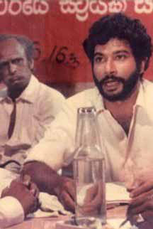